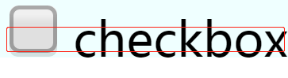
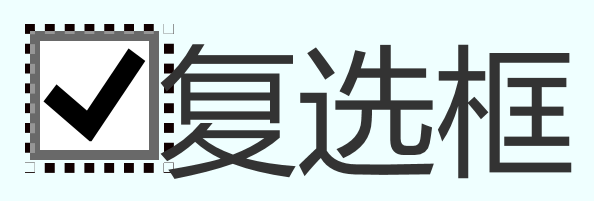

checkbox不可告人的秘密
对齐方式的表现差异
这里是文本
这里是文本
基线：文字排版的用词，针对英文字母，指英文字母平时“坐”的位置，就是a,b,c等字母的底线
在中文上则不同在浏览器上，虽然没有直观的底线，基线，中线等概念的划分，
但是大多数情况下（IE6、IE7理解底线等有误，IE8已纠正），基线之类的概念浏览器是认的，
例如，某12像素的汉字，浏览器会把距离汉字底部（不妨假定为1像素的地方）当作基线。 大多数文字和行内元素排列对齐的方式是一样的：基线(baseline)对齐
少部分会有差异。但是，跨浏览器的情况下差异会更加明显。
比如，文字和普通输入框对齐：输入框中线和文字基线对齐的方式
文字和图片的对齐则是基线(baseline)对齐
在两点在谷歌和ie11下表现是一致的，现在说回主角：复选框的对齐方式
在中文上则不同在浏览器上，虽然没有直观的底线，基线，中线等概念的划分，
但是大多数情况下（IE6、IE7理解底线等有误，IE8已纠正），基线之类的概念浏览器是认的，
例如，某12像素的汉字，浏览器会把距离汉字底部（不妨假定为1像素的地方）当作基线。 大多数文字和行内元素排列对齐的方式是一样的：基线(baseline)对齐
少部分会有差异。但是，跨浏览器的情况下差异会更加明显。
比如，文字和普通输入框对齐：输入框中线和文字基线对齐的方式
文字和图片的对齐则是基线(baseline)对齐
在两点在谷歌和ie11下表现是一致的，现在说回主角：复选框的对齐方式
复选框
复选框
复选框
checkbox
以上4行字体分别为16 14 12(中文) 12(英文),不同的字体大小同样是把距离汉字底部（不妨假定为1像素的地方）当作基线。
非常奇怪的是，谷歌浏览器下12像素的英文对齐如同中文一般对齐，IE11下则是正常的字母基线对齐
非常奇怪的是，谷歌浏览器下12像素的英文对齐如同中文一般对齐，IE11下则是正常的字母基线对齐
ie11下
谷歌下
对齐间距的表现差异
复选框
复选框为什么会和对齐的文字中有所间距，不同浏览器也表现不同
谷歌下: 我们看见的复选框只是冰山一角，如下图蓝色边框包围着的全是复选框，另外
还有margin: 3px 3px 3px 4px;的默认样式，所以会有这样的间距
ie11下: 除了具有相同margin样式值，还有边缘的选线圈，这也是checkbox的一部分
相较起来ie11下比谷歌距离文字更近
谷歌下: 我们看见的复选框只是冰山一角，如下图蓝色边框包围着的全是复选框，另外
还有margin: 3px 3px 3px 4px;的默认样式，所以会有这样的间距
ie11下: 除了具有相同margin样式值，还有边缘的选线圈，这也是checkbox的一部分
相较起来ie11下比谷歌距离文字更近
ie11下
谷歌下
对齐方法补充
对齐对齐
这里通过改变字体和margin达到对齐，放大6 7倍之后，IE11下的对齐效果仍然明显，谷歌下偏离
判断单个选中
判断复选框组是否选中
我 沙 漠 风 暴全选/反选复选框
我 沙 漠 风 暴
全选
全选/反选复选框(MVVM方法)
我 沙 漠 风 暴
全选
获取选中项
我 沙 漠 风 暴获取选中项(MVVM方法)
我 沙 漠 风 暴{{@me | delPoint}} {{@sha | delPoint}} {{@mo | delPoint}} {{@feng | delPoint}} {{@bao | delPoint}}
选取复选框即可
以上应用的方法可以右键浏览器查看源码，有些方法有不止一种方法。